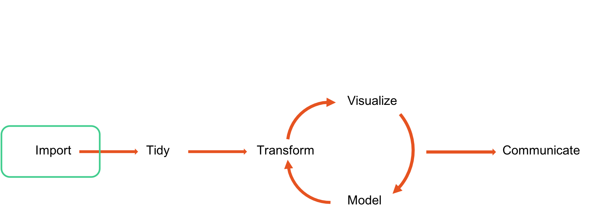
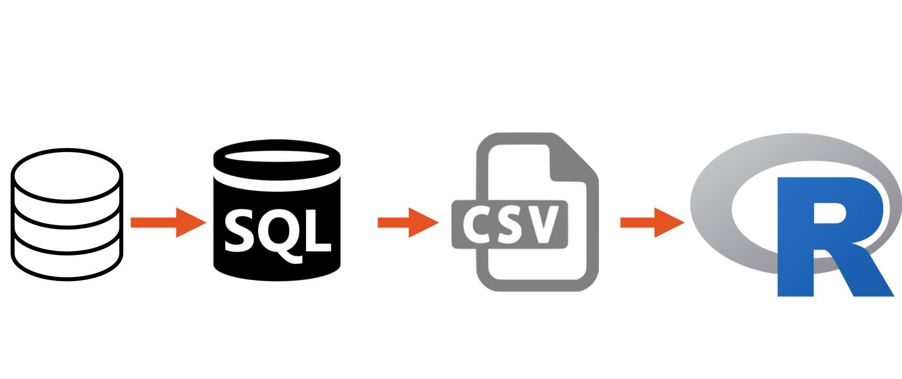
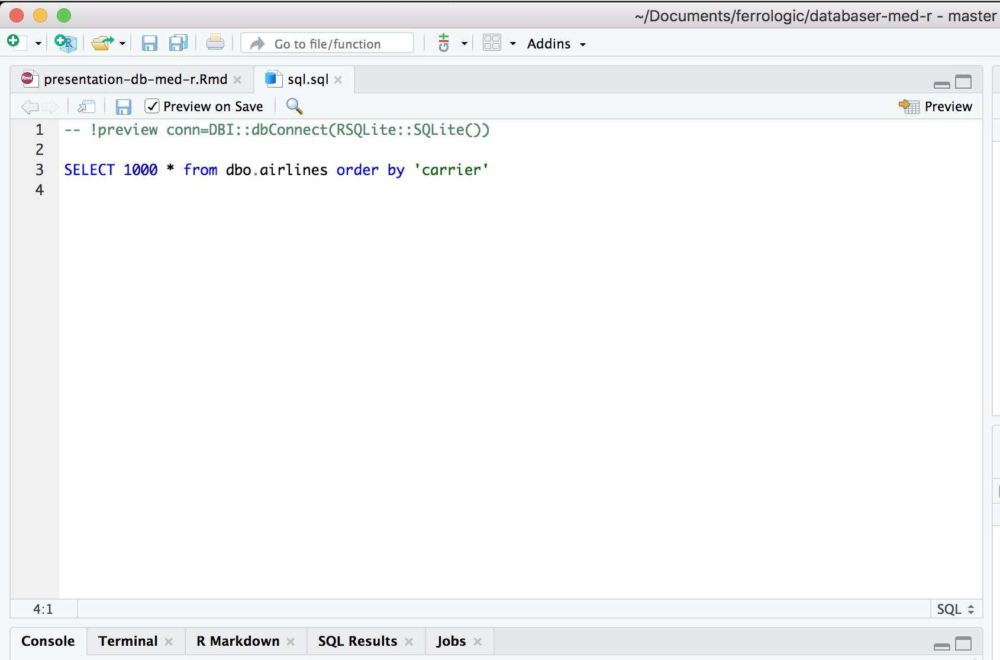

Hur använder vi data i R?

Det vanliga förfarandet

Och med databaser då?

Och med databaser då?
Några miljoner rader senare…
Alternativ?

Finns numera god möjligheter att göra allt du behöver i RStudio 1.2

Utforska databasen

Du kan till och med skriva SQL

Men varför skriva SQL?
Ett exempel
- Vår egen Snowflake-databas med data från FIS
my_db <- src_snowflakedb(user = keyring::key_list("snowflake")[1,2],
password = keyring::key_get("snowflake"),
account = "ferrologic",
region = "eu-central-1",
opts = list(warehouse = "SWESKI_ANALYTICS",
db = "SWESKI_DB",
schema = "SWESKI_SCHEMA"))
Det vanliga är dock odbc
library(odbc) con_userdb <- dbConnect(odbc::odbc(), 'master_db', encoding = "latin1")
Vi är nu uppkopplade mot databasen

SQL
SELECT "ORIGIN_STATE_ABR", AVG("DEP_DELAY") AS "DEP_DELAY_AVG"
FROM "airline"
GROUP BY "ORIGIN_STATE_ABR"
dplyr
mtcars %>% group_by(cyl) %>% summarise(mean_mpg = mean(mpg), sd_mpg = sd(mpg))
## # A tibble: 3 x 3 ## cyl mean_mpg sd_mpg ## <dbl> <dbl> <dbl> ## 1 4 26.7 4.51 ## 2 6 19.7 1.45 ## 3 8 15.1 2.56
SQL är inte gjort för dataanalys
- Men det är dplyr
Använd dplyr för att skriva SQL-kod
tbl(my_db, "RESULTAL") %>% head()
## # Source: lazy query [?? x 17] ## # Database: SnowflakeDB Data Source ## RECID RACEID COMPETITORID COMPETITORNAME POSITION STATUS BIB ## <dbl> <dbl> <dbl> <chr> <dbl> <chr> <dbl> ## 1 5.40e6 92888 203603 KANG Chang-Ye… 44 QLF 57 ## 2 5.40e6 91655 215091 DANCIU Raul 0 DNS1 109 ## 3 5.40e6 91655 68886 ZRNCIC DIM Na… 15 QLF 51 ## 4 5.40e6 92888 198139 YAMADA Kai 0 DNF1 109 ## 5 5.40e6 92101 190874 GIANNOTTI Chi… 0 DNS2 41 ## 6 5.40e6 92887 187410 KAWABATA Kaede 0 DNF2 6 ## # ... with 10 more variables: NATIONCODE <chr>, TIMER1 <chr>, ## # TIMER2 <chr>, TIMER3 <chr>, TIMETOT <chr>, VALID <dbl>, ## # RACEPOINTS <dbl>, CUPPOINTS <dbl>, LASTUPDATE <chr>, LOADDATE <chr>
I bakgrunden skriver dplyr SQL åt dig
tbl(my_db, "RESULTAL") %>% head() %>% show_query()
## <SQL> ## SELECT * ## FROM "RESULTAL" ## LIMIT 6
Vi kan göra mer komplexa queries
tbl(my_db, "CUPRESULT") %>%
left_join(tbl(my_db, "COMPETITOR") %>%
select(COMPETITORID, NATIONCODE), by = c("COMPETITORID")) %>%
filter(SEASONCODE == 2018 & CUPID == "WC" & SECTORCODE == "AL") %>%
group_by(NATIONCODE) %>%
summarise(points_per_country = sum(POINTS, na.rm = TRUE) / n()) %>%
arrange(desc(points_per_country)) %>%
head(10)
## # Source: lazy query [?? x 2] ## # Database: SnowflakeDB Data Source ## # Ordered by: desc(points_per_country) ## NATIONCODE points_per_country ## <chr> <dbl> ## 1 LIE 444. ## 2 NOR 187. ## 3 SWE 172. ## 4 AUT 154. ## 5 SVK 149. ## 6 SUI 143. ## 7 ITA 131. ## 8 USA 125. ## 9 GER 117. ## 10 GBR 114. ## # ... with more rows
Åter igen, det här är bara SQL-queries
## <SQL>
## SELECT "NATIONCODE", SUM("POINTS") / COUNT(*) AS "points_per_country"
## FROM (SELECT "TBL_LEFT"."RECID" AS "RECID", "TBL_LEFT"."SECTORCODE" AS "SECTORCODE", "TBL_LEFT"."SEASONCODE" AS "SEASONCODE", "TBL_LEFT"."CUPID" AS "CUPID", "TBL_LEFT"."DISCIPLINECODE" AS "DISCIPLINECODE", "TBL_LEFT"."COMPETITORID" AS "COMPETITORID", "TBL_LEFT"."GENDER" AS "GENDER", "TBL_LEFT"."RANK" AS "RANK", "TBL_LEFT"."POINTS" AS "POINTS", "TBL_LEFT"."LASTUPDATE" AS "LASTUPDATE", "TBL_LEFT"."LOADDATE" AS "LOADDATE", "TBL_RIGHT"."NATIONCODE" AS "NATIONCODE"
## FROM "CUPRESULT" AS "TBL_LEFT"
## LEFT JOIN (SELECT "COMPETITORID", "NATIONCODE"
## FROM "COMPETITOR") "TBL_RIGHT"
## ON ("TBL_LEFT"."COMPETITORID" = "TBL_RIGHT"."COMPETITORID")
## ) "aqcwsqtwpl"
## WHERE ("SEASONCODE" = 2018.0 AND "CUPID" = 'WC' AND "SECTORCODE" = 'AL')
## GROUP BY "NATIONCODE"
## ORDER BY "points_per_country" DESC
## LIMIT 6
Vi utnyttjar det bästa i SQL
- Vi kan sedan spara data från en query till en data.frame.
points_per_country <- tbl(my_db, "CUPRESULT") %>%
left_join(tbl(my_db, "COMPETITOR") %>%
select(COMPETITORID, NATIONCODE), by = c("COMPETITORID")) %>%
filter(SEASONCODE == 2018 & CUPID == "WC" & SECTORCODE == "AL") %>%
group_by(NATIONCODE) %>%
summarise(points_per_country = sum(POINTS, na.rm = TRUE) / n()) %>%
arrange(desc(points_per_country)) %>%
head(10) %>%
collect()
Data kan vi sedan använda precis hur vi vill i R
library(readxl)
countries <- read_excel("/Users/filipwastberg/Documents/ferrologic/countrycodes.xlsx")
points_per_country <- points_per_country %>%
mutate(NATIONCODE = case_when(
NATIONCODE == "GER" ~ "DEU",
NATIONCODE == "SUI" ~ "CHE",
TRUE ~ as.character(NATIONCODE)
))
points_with_flag <- left_join(points_per_country, countries) %>%
mutate(A2 = tolower(A2))
Data kan vi sedan använda precis hur vi vill i R
Men du behöver inte ladda ner data
library(dbplot)
library(scales)
tbl(my_db, "CUPRESULT") %>%
left_join(tbl(my_db, "COMPETITOR") %>%
select(COMPETITORID, NATIONCODE),
by = c("COMPETITORID")) %>%
filter(GENDER %in% c("L", "M")) %>%
db_compute_count(GENDER) %>%
rename(n = "n()") %>%
ggplot() +
geom_col(aes(x = GENDER, y = n, fill = GENDER)) +
labs(title = "Gender distribution of comptetitors in Alpine competitions",
subtitle = "Source: FIS Database", x = "Gender", y = "") +
guides(fill = FALSE) +
scale_y_continuous(labels = filipp::space) +
theme_minimal() +
scale_fill_viridis_d()
Men du behöver inte ladda ner data
När aggregerad data inte räcker
- Ingen metod för sampling i SQL
När aggregerad data inte räcker
rows <- tbl(my_db, "RESULTAL") %>% filter(STATUS == "QLF") %>% tally() %>% pull() sample_rows <- sample(1:rows, 600)
När aggregerad data inte räcker
df <- tbl(my_db, "RESULTAL") %>% filter(STATUS == "QLF") %>% arrange(LASTUPDATE) %>% mutate(rown = row_number()) %>% filter(rown %in% sample_rows) %>% collect() count(df)
## # A tibble: 1 x 1 ## n ## <int> ## 1 600
Att köra modeller i databaser
- Tidigare en fråga om analysplattform
Att köra modeller i databaser
library(randomForest)
titanic_train <- titanic::titanic_train %>%
mutate_if(is.character, funs(as.factor(.))) %>%
na.omit()
titanic_fit <- randomForest(as.factor(Survived) ~
Pclass + Sex + Age + SibSp +
Parch + Fare + Embarked,
data = titanic_train,
importance = TRUE,
ntree = 100)
Att köra modeller i databaser
library(tidypredict) tidypredict_sql(titanic_fit, dbplyr::simulate_mssql())
## <SQL> CASE
## WHEN ((`Parch` > 0.5 AND `Embarked` <= 4.0)) THEN ('0')
## WHEN ((`Sex` > 1.0 AND `Embarked` <= 2.0 AND `Fare` <= 26.14375 AND `Parch` <= 0.5)) THEN ('0')
## WHEN ((`Pclass` > 2.5 AND `Fare` > 26.14375 AND `Sex` > 1.0 AND `Parch` <= 0.5)) THEN ('1')
## WHEN ((`Age` <= 9.5 AND `Age` <= 14.5 AND `SibSp` <= 0.5 AND `Sex` <= 1.0 AND `Parch` <= 0.5)) THEN ('1')
## WHEN ((`Age` > 9.5 AND `Age` <= 14.5 AND `SibSp` <= 0.5 AND `Sex` <= 1.0 AND `Parch` <= 0.5)) THEN ('0')
## WHEN ((`Age` > 14.5 AND `Embarked` <= 3.0 AND `SibSp` <= 0.5 AND `Sex` <= 1.0 AND `Parch` <= 0.5)) THEN ('1')
## WHEN ((`Fare` > 22.5 AND `SibSp` > 0.5 AND `Pclass` <= 2.5 AND `Sex` <= 1.0 AND `Parch` <= 0.5)) THEN ('1')
## WHEN ((`SibSp` > 2.5 AND `Pclass` > 2.5 AND `SibSp` > 0.5 AND `Sex` <= 1.0 AND `Parch` <= 0.5)) THEN ('1')
## WHEN ((`Embarked` > 2.0 AND `Sex` > 1.0 AND `Pclass` <= 1.5 AND `Fare` <= 26.14375 AND `Parch` <= 0.5)) THEN ('0')
## WHEN ((`Fare` > 26.14375 AND `Sex` > 1.0 AND `Fare` <= 26.46875 AND `Pclass` <= 2.5 AND `Parch` <= 0.5)) THEN ('1')
## WHEN ((`Embarked` > 4.0 AND `Parch` > 0.5 AND `Fare` <= 116.70415 AND `SibSp` <= 2.5 AND `Age` <= 7.5)) THEN ('1')
## WHEN ((`Fare` > 35.5375 AND `SibSp` > 2.5 AND `Embarked` > 4.0 AND `Parch` > 0.5 AND `Age` <= 7.5)) THEN ('0')
## WHEN ((`Embarked` > 3.0 AND `Age` > 14.5 AND `Pclass` <= 1.5 AND `SibSp` <= 0.5 AND `Sex` <= 1.0 AND `Parch` <= 0.5)) THEN ('1')
## WHEN ((`Pclass` > 1.5 AND `Embarked` > 3.0 AND `Age` > 14.5 AND `SibSp` <= 0.5 AND `Sex` <= 1.0 AND `Parch` <= 0.5)) THEN ('1')
## WHEN ((`SibSp` > 2.0 AND `SibSp` > 0.5 AND `Fare` <= 22.5 AND `Pclass` <= 2.5 AND `Sex` <= 1.0 AND `Parch` <= 0.5)) THEN ('1')
## WHEN ((`SibSp` > 1.5 AND `Pclass` > 2.5 AND `SibSp` > 0.5 AND `SibSp` <= 2.5 AND `Sex` <= 1.0 AND `Parch` <= 0.5)) THEN ('0')
## WHEN ((`Age` > 75.5 AND `Fare` > 26.46875 AND `Fare` > 26.14375 AND `Sex` > 1.0 AND `Pclass` <= 2.5 AND `Parch` <= 0.5)) THEN ('1')
## WHEN ((`Fare` > 116.70415 AND `Embarked` > 4.0 AND `Parch` > 0.5 AND `Age` <= 1.46 AND `SibSp` <= 2.5 AND `Age` <= 7.5)) THEN ('1')
## WHEN ((`Age` > 1.46 AND `Fare` > 116.70415 AND `Embarked` > 4.0 AND `Parch` > 0.5 AND `SibSp` <= 2.5 AND `Age` <= 7.5)) THEN ('0')
## WHEN ((`SibSp` > 2.5 AND `Embarked` > 4.0 AND `Parch` > 0.5 AND `SibSp` <= 3.5 AND `Fare` <= 35.5375 AND `Age` <= 7.5)) THEN ('0')
## WHEN ((`Fare` > 48.2 AND `Age` > 7.5 AND `Embarked` > 4.0 AND `Parch` > 0.5 AND `Parch` <= 1.5 AND `Sex` <= 1.0)) THEN ('1')
## WHEN ((`Sex` > 1.0 AND `Age` > 7.5 AND `Embarked` > 4.0 AND `Parch` > 0.5 AND `Age` <= 18.0 AND `Pclass` <= 1.5)) THEN ('1')
## WHEN ((`SibSp` > 0.5 AND `Embarked` <= 2.0 AND `SibSp` <= 2.0 AND `Fare` <= 22.5 AND `Pclass` <= 2.5 AND `Sex` <= 1.0 AND `Parch` <= 0.5)) THEN ('1')
## WHEN ((`Embarked` > 2.0 AND `SibSp` > 0.5 AND `SibSp` <= 2.0 AND `Fare` <= 22.5 AND `Pclass` <= 2.5 AND `Sex` <= 1.0 AND `Parch` <= 0.5)) THEN ('0')
## WHEN ((`Pclass` > 2.5 AND `SibSp` > 0.5 AND `Age` <= 16.5 AND `SibSp` <= 1.5 AND `SibSp` <= 2.5 AND `Sex` <= 1.0 AND `Parch` <= 0.5)) THEN ('1')
## WHEN ((`Fare` > 8.20625 AND `Pclass` > 1.5 AND `Embarked` > 2.0 AND `Sex` > 1.0 AND `Age` <= 32.5 AND `Fare` <= 26.14375 AND `Parch` <= 0.5)) THEN ('0')
## WHEN ((`Age` > 32.5 AND `Pclass` > 1.5 AND `Embarked` > 2.0 AND `Sex` > 1.0 AND `Fare` <= 7.9104 AND `Fare` <= 26.14375 AND `Parch` <= 0.5)) THEN ('0')
## WHEN ((`Pclass` > 1.5 AND `Fare` > 26.46875 AND `Fare` > 26.14375 AND `Sex` > 1.0 AND `Age` <= 75.5 AND `Pclass` <= 2.5 AND `Parch` <= 0.5)) THEN ('0')
## WHEN ((`SibSp` > 3.5 AND `SibSp` > 2.5 AND `Embarked` > 4.0 AND `Parch` > 0.5 AND `Age` <= 2.5 AND `Fare` <= 35.5375 AND `Age` <= 7.5)) THEN ('0')
## WHEN ((`Age` > 2.5 AND `SibSp` > 3.5 AND `SibSp` > 2.5 AND `Embarked` > 4.0 AND `Parch` > 0.5 AND `Fare` <= 35.5375 AND `Age` <= 7.5)) THEN ('1')
## WHEN ((`Parch` > 1.5 AND `Fare` > 48.2 AND `Age` > 7.5 AND `Embarked` > 4.0 AND `Parch` > 0.5 AND `Embarked` <= 2.0 AND `Sex` <= 1.0)) THEN ('1')
## WHEN ((`Pclass` > 1.5 AND `Sex` > 1.0 AND `Age` > 7.5 AND `Embarked` > 4.0 AND `Parch` > 0.5 AND `Fare` <= 15.07085 AND `Parch` <= 1.5)) THEN ('0')
## WHEN ((`Fare` > 20.55 AND `Parch` > 1.5 AND `Pclass` > 1.5 AND `Sex` > 1.0 AND `Age` > 7.5 AND `Embarked` > 4.0 AND `Parch` > 0.5)) THEN ('0')
## WHEN ((`Age` > 24.5 AND `Age` > 16.5 AND `Pclass` > 2.5 AND `SibSp` > 0.5 AND `SibSp` <= 1.5 AND `SibSp` <= 2.5 AND `Sex` <= 1.0 AND `Parch` <= 0.5)) THEN ('0')
## WHEN ((`Age` > 31.5 AND `Pclass` > 1.5 AND `Embarked` > 2.0 AND `Sex` > 1.0 AND `Fare` <= 8.20625 AND `Age` <= 32.5 AND `Fare` <= 26.14375 AND `Parch` <= 0.5)) THEN ('1')
## WHEN ((`Fare` > 7.9104 AND `Age` > 32.5 AND `Pclass` > 1.5 AND `Embarked` > 2.0 AND `Sex` > 1.0 AND `Embarked` <= 4.0 AND `Fare` <= 26.14375 AND `Parch` <= 0.5)) THEN ('0')
## WHEN ((`Fare` > 121.275 AND `Fare` > 26.46875 AND `Fare` > 26.14375 AND `Sex` > 1.0 AND `Pclass` <= 1.5 AND `Age` <= 75.5 AND `Pclass` <= 2.5 AND `Parch` <= 0.5)) THEN ('1')
## WHEN ((`SibSp` > 0.5 AND `Age` > 7.5 AND `Embarked` > 4.0 AND `Parch` > 0.5 AND `Fare` <= 17.3729 AND `Parch` <= 1.5 AND `Fare` <= 48.2 AND `Sex` <= 1.0)) THEN ('0')
## WHEN ((`Fare` > 17.3729 AND `Age` > 7.5 AND `Embarked` > 4.0 AND `Parch` > 0.5 AND `SibSp` <= 2.0 AND `Parch` <= 1.5 AND `Fare` <= 48.2 AND `Sex` <= 1.0)) THEN ('1')
## WHEN ((`SibSp` > 2.0 AND `Fare` > 17.3729 AND `Age` > 7.5 AND `Embarked` > 4.0 AND `Parch` > 0.5 AND `Parch` <= 1.5 AND `Fare` <= 48.2 AND `Sex` <= 1.0)) THEN ('0')
## WHEN ((`Parch` > 1.5 AND `Age` > 7.5 AND `Embarked` > 4.0 AND `Parch` > 0.5 AND `Pclass` <= 2.5 AND `SibSp` <= 0.5 AND `Fare` <= 48.2 AND `Sex` <= 1.0)) THEN ('1')
## WHEN ((`Embarked` > 2.0 AND `Parch` > 1.5 AND `Fare` > 48.2 AND `Age` > 7.5 AND `Embarked` > 4.0 AND `Parch` > 0.5 AND `Pclass` <= 1.5 AND `Sex` <= 1.0)) THEN ('1')
## WHEN ((`Pclass` > 1.5 AND `Embarked` > 2.0 AND `Parch` > 1.5 AND `Fare` > 48.2 AND `Age` > 7.5 AND `Embarked` > 4.0 AND `Parch` > 0.5 AND `Sex` <= 1.0)) THEN ('1')
## WHEN ((`Age` > 18.0 AND `Sex` > 1.0 AND `Age` > 7.5 AND `Embarked` > 4.0 AND `Parch` > 0.5 AND `Age` <= 25.0 AND `Embarked` <= 2.0 AND `Pclass` <= 1.5)) THEN ('1')
## WHEN ((`Embarked` > 2.0 AND `Age` > 18.0 AND `Sex` > 1.0 AND `Age` > 7.5 AND `Embarked` > 4.0 AND `Parch` > 0.5 AND `Fare` <= 157.7771 AND `Pclass` <= 1.5)) THEN ('1')
## WHEN ((`Fare` > 157.7771 AND `Embarked` > 2.0 AND `Age` > 18.0 AND `Sex` > 1.0 AND `Age` > 7.5 AND `Embarked` > 4.0 AND `Parch` > 0.5 AND `Pclass` <= 1.5)) THEN ('0')
## WHEN ((`Age` > 24.0 AND `Fare` > 15.07085 AND `Pclass` > 1.5 AND `Sex` > 1.0 AND `Age` > 7.5 AND `Embarked` > 4.0 AND `Parch` > 0.5 AND `Parch` <= 1.5)) THEN ('0')
## WHEN ((`Parch` > 1.5 AND `Pclass` > 1.5 AND `Sex` > 1.0 AND `Age` > 7.5 AND `Embarked` > 4.0 AND `Parch` > 0.5 AND `Age` <= 24.75 AND `Fare` <= 20.55)) THEN ('1')
## WHEN ((`Age` > 24.75 AND `Parch` > 1.5 AND `Pclass` > 1.5 AND `Sex` > 1.0 AND `Age` > 7.5 AND `Embarked` > 4.0 AND `Parch` > 0.5 AND `Fare` <= 20.55)) THEN ('0')
## WHEN ((`Age` > 16.5 AND `Pclass` > 2.5 AND `SibSp` > 0.5 AND `Age` <= 22.0 AND `Age` <= 24.5 AND `SibSp` <= 1.5 AND `SibSp` <= 2.5 AND `Sex` <= 1.0 AND `Parch` <= 0.5)) THEN ('0')
## WHEN ((`Age` > 22.0 AND `Age` > 16.5 AND `Pclass` > 2.5 AND `SibSp` > 0.5 AND `Age` <= 24.5 AND `SibSp` <= 1.5 AND `SibSp` <= 2.5 AND `Sex` <= 1.0 AND `Parch` <= 0.5)) THEN ('1')
## WHEN ((`Embarked` > 4.0 AND `Fare` > 7.9104 AND `Age` > 32.5 AND `Pclass` > 1.5 AND `Embarked` > 2.0 AND `Sex` > 1.0 AND `Pclass` <= 2.5 AND `Fare` <= 26.14375 AND `Parch` <= 0.5)) THEN ('0')
## WHEN ((`Age` > 7.5 AND `Embarked` > 4.0 AND `Parch` > 0.5 AND `Fare` <= 13.4646 AND `SibSp` <= 0.5 AND `Fare` <= 17.3729 AND `Parch` <= 1.5 AND `Fare` <= 48.2 AND `Sex` <= 1.0)) THEN ('1')
## WHEN ((`Fare` > 13.4646 AND `Age` > 7.5 AND `Embarked` > 4.0 AND `Parch` > 0.5 AND `SibSp` <= 0.5 AND `Fare` <= 17.3729 AND `Parch` <= 1.5 AND `Fare` <= 48.2 AND `Sex` <= 1.0)) THEN ('0')
## WHEN ((`Parch` > 3.5 AND `Pclass` > 2.5 AND `Parch` > 1.5 AND `Age` > 7.5 AND `Embarked` > 4.0 AND `Parch` > 0.5 AND `SibSp` <= 0.5 AND `Fare` <= 48.2 AND `Sex` <= 1.0)) THEN ('0')
## WHEN ((`SibSp` > 0.5 AND `Parch` > 1.5 AND `Age` > 7.5 AND `Embarked` > 4.0 AND `Parch` > 0.5 AND `Fare` <= 17.9125 AND `Parch` <= 4.5 AND `Fare` <= 48.2 AND `Sex` <= 1.0)) THEN ('1')
## WHEN ((`Fare` > 17.9125 AND `SibSp` > 0.5 AND `Parch` > 1.5 AND `Age` > 7.5 AND `Embarked` > 4.0 AND `Parch` > 0.5 AND `Parch` <= 4.5 AND `Fare` <= 48.2 AND `Sex` <= 1.0)) THEN ('0')
## WHEN ((`Parch` > 4.5 AND `SibSp` > 0.5 AND `Parch` > 1.5 AND `Age` > 7.5 AND `Embarked` > 4.0 AND `Parch` > 0.5 AND `Age` <= 38.5 AND `Fare` <= 48.2 AND `Sex` <= 1.0)) THEN ('1')
## WHEN ((`Age` > 38.5 AND `Parch` > 4.5 AND `SibSp` > 0.5 AND `Parch` > 1.5 AND `Age` > 7.5 AND `Embarked` > 4.0 AND `Parch` > 0.5 AND `Fare` <= 48.2 AND `Sex` <= 1.0)) THEN ('0')
## WHEN ((`Age` > 25.0 AND `Age` > 18.0 AND `Sex` > 1.0 AND `Age` > 7.5 AND `Embarked` > 4.0 AND `Parch` > 0.5 AND `Parch` <= 1.5 AND `Embarked` <= 2.0 AND `Pclass` <= 1.5)) THEN ('0')
## WHEN ((`Parch` > 1.5 AND `Age` > 25.0 AND `Age` > 18.0 AND `Sex` > 1.0 AND `Age` > 7.5 AND `Embarked` > 4.0 AND `Parch` > 0.5 AND `Embarked` <= 2.0 AND `Pclass` <= 1.5)) THEN ('0')
## WHEN ((`Fare` > 15.07085 AND `Pclass` > 1.5 AND `Sex` > 1.0 AND `Age` > 7.5 AND `Embarked` > 4.0 AND `Parch` > 0.5 AND `Fare` <= 26.24585 AND `Age` <= 24.0 AND `Parch` <= 1.5)) THEN ('1')
## WHEN ((`Pclass` > 1.5 AND `Embarked` > 2.0 AND `Sex` > 1.0 AND `Fare` <= 7.19585 AND `SibSp` <= 0.5 AND `Age` <= 31.5 AND `Fare` <= 8.20625 AND `Age` <= 32.5 AND `Fare` <= 26.14375 AND `Parch` <= 0.5)) THEN ('0')
## WHEN ((`Fare` > 7.8896 AND `SibSp` > 0.5 AND `Pclass` > 1.5 AND `Embarked` > 2.0 AND `Sex` > 1.0 AND `Age` <= 31.5 AND `Fare` <= 8.20625 AND `Age` <= 32.5 AND `Fare` <= 26.14375 AND `Parch` <= 0.5)) THEN ('1')
## WHEN ((`Fare` > 7.9875 AND `Pclass` > 2.5 AND `Embarked` > 4.0 AND `Fare` > 7.9104 AND `Age` > 32.5 AND `Pclass` > 1.5 AND `Embarked` > 2.0 AND `Sex` > 1.0 AND `Fare` <= 26.14375 AND `Parch` <= 0.5)) THEN ('0')
## WHEN ((`Fare` > 26.46875 AND `Fare` > 26.14375 AND `Sex` > 1.0 AND `Embarked` <= 4.0 AND `Age` <= 53.0 AND `Fare` <= 121.275 AND `Pclass` <= 1.5 AND `Age` <= 75.5 AND `Pclass` <= 2.5 AND `Parch` <= 0.5)) THEN ('0')
## WHEN ((`Age` > 53.0 AND `Fare` > 26.46875 AND `Fare` > 26.14375 AND `Sex` > 1.0 AND `Fare` <= 33.9104 AND `Fare` <= 121.275 AND `Pclass` <= 1.5 AND `Age` <= 75.5 AND `Pclass` <= 2.5 AND `Parch` <= 0.5)) THEN ('0')
## WHEN ((`Pclass` > 2.5 AND `Parch` > 1.5 AND `Age` > 7.5 AND `Embarked` > 4.0 AND `Parch` > 0.5 AND `Age` <= 17.0 AND `Parch` <= 3.5 AND `SibSp` <= 0.5 AND `Fare` <= 48.2 AND `Sex` <= 1.0)) THEN ('0')
## WHEN ((`Age` > 17.0 AND `Pclass` > 2.5 AND `Parch` > 1.5 AND `Age` > 7.5 AND `Embarked` > 4.0 AND `Parch` > 0.5 AND `Parch` <= 3.5 AND `SibSp` <= 0.5 AND `Fare` <= 48.2 AND `Sex` <= 1.0)) THEN ('1')
## WHEN ((`Fare` > 26.24585 AND `Fare` > 15.07085 AND `Pclass` > 1.5 AND `Sex` > 1.0 AND `Age` > 7.5 AND `Embarked` > 4.0 AND `Parch` > 0.5 AND `Age` <= 11.0 AND `Age` <= 24.0 AND `Parch` <= 1.5)) THEN ('1')
## WHEN ((`Age` > 11.0 AND `Fare` > 26.24585 AND `Fare` > 15.07085 AND `Pclass` > 1.5 AND `Sex` > 1.0 AND `Age` > 7.5 AND `Embarked` > 4.0 AND `Parch` > 0.5 AND `Age` <= 24.0 AND `Parch` <= 1.5)) THEN ('0')
## WHEN ((`Fare` > 7.19585 AND `Pclass` > 1.5 AND `Embarked` > 2.0 AND `Sex` > 1.0 AND `Age` <= 19.75 AND `SibSp` <= 0.5 AND `Age` <= 31.5 AND `Fare` <= 8.20625 AND `Age` <= 32.5 AND `Fare` <= 26.14375 AND `Parch` <= 0.5)) THEN ('0')
## WHEN ((`SibSp` > 0.5 AND `Pclass` > 1.5 AND `Embarked` > 2.0 AND `Sex` > 1.0 AND `Age` <= 21.5 AND `Fare` <= 7.8896 AND `Age` <= 31.5 AND `Fare` <= 8.20625 AND `Age` <= 32.5 AND `Fare` <= 26.14375 AND `Parch` <= 0.5)) THEN ('0')
## WHEN ((`Pclass` > 2.5 AND `Embarked` > 4.0 AND `Fare` > 7.9104 AND `Age` > 32.5 AND `Pclass` > 1.5 AND `Embarked` > 2.0 AND `Sex` > 1.0 AND `SibSp` <= 1.0 AND `Fare` <= 7.9875 AND `Fare` <= 26.14375 AND `Parch` <= 0.5)) THEN ('0')
## WHEN ((`SibSp` > 1.0 AND `Pclass` > 2.5 AND `Embarked` > 4.0 AND `Fare` > 7.9104 AND `Age` > 32.5 AND `Pclass` > 1.5 AND `Embarked` > 2.0 AND `Sex` > 1.0 AND `Fare` <= 7.9875 AND `Fare` <= 26.14375 AND `Parch` <= 0.5)) THEN ('0')
## WHEN ((`Fare` > 33.9104 AND `Age` > 53.0 AND `Fare` > 26.46875 AND `Fare` > 26.14375 AND `Sex` > 1.0 AND `Fare` <= 42.5021 AND `Fare` <= 121.275 AND `Pclass` <= 1.5 AND `Age` <= 75.5 AND `Pclass` <= 2.5 AND `Parch` <= 0.5)) THEN ('1')
## WHEN ((`Fare` > 42.5021 AND `Fare` > 33.9104 AND `Age` > 53.0 AND `Fare` > 26.46875 AND `Fare` > 26.14375 AND `Sex` > 1.0 AND `Fare` <= 121.275 AND `Pclass` <= 1.5 AND `Age` <= 75.5 AND `Pclass` <= 2.5 AND `Parch` <= 0.5)) THEN ('0')
## WHEN ((`Age` > 19.75 AND `Fare` > 7.19585 AND `Pclass` > 1.5 AND `Embarked` > 2.0 AND `Sex` > 1.0 AND `Fare` <= 7.7979 AND `SibSp` <= 0.5 AND `Age` <= 31.5 AND `Fare` <= 8.20625 AND `Age` <= 32.5 AND `Fare` <= 26.14375 AND `Parch` <= 0.5)) THEN ('0')
## WHEN ((`Fare` > 7.7979 AND `Age` > 19.75 AND `Fare` > 7.19585 AND `Pclass` > 1.5 AND `Embarked` > 2.0 AND `Sex` > 1.0 AND `SibSp` <= 0.5 AND `Age` <= 31.5 AND `Fare` <= 8.20625 AND `Age` <= 32.5 AND `Fare` <= 26.14375 AND `Parch` <= 0.5)) THEN ('0')
## WHEN ((`Age` > 21.5 AND `SibSp` > 0.5 AND `Pclass` > 1.5 AND `Embarked` > 2.0 AND `Sex` > 1.0 AND `Fare` <= 7.8146 AND `Fare` <= 7.8896 AND `Age` <= 31.5 AND `Fare` <= 8.20625 AND `Age` <= 32.5 AND `Fare` <= 26.14375 AND `Parch` <= 0.5)) THEN ('1')
## WHEN ((`Fare` > 7.8146 AND `Age` > 21.5 AND `SibSp` > 0.5 AND `Pclass` > 1.5 AND `Embarked` > 2.0 AND `Sex` > 1.0 AND `Fare` <= 7.8896 AND `Age` <= 31.5 AND `Fare` <= 8.20625 AND `Age` <= 32.5 AND `Fare` <= 26.14375 AND `Parch` <= 0.5)) THEN ('0')
## WHEN ((`Age` > 47.5 AND `Embarked` > 4.0 AND `Fare` > 26.46875 AND `Fare` > 26.14375 AND `Sex` > 1.0 AND `SibSp` <= 0.5 AND `Age` <= 53.0 AND `Fare` <= 121.275 AND `Pclass` <= 1.5 AND `Age` <= 75.5 AND `Pclass` <= 2.5 AND `Parch` <= 0.5)) THEN ('1')
## WHEN ((`SibSp` > 0.5 AND `Embarked` > 4.0 AND `Fare` > 26.46875 AND `Fare` > 26.14375 AND `Sex` > 1.0 AND `Age` <= 39.5 AND `Age` <= 53.0 AND `Fare` <= 121.275 AND `Pclass` <= 1.5 AND `Age` <= 75.5 AND `Pclass` <= 2.5 AND `Parch` <= 0.5)) THEN ('0')
## WHEN ((`Embarked` > 4.0 AND `Fare` > 26.46875 AND `Fare` > 26.14375 AND `Sex` > 1.0 AND `Age` <= 35.0 AND `Age` <= 47.5 AND `SibSp` <= 0.5 AND `Age` <= 53.0 AND `Fare` <= 121.275 AND `Pclass` <= 1.5 AND `Age` <= 75.5 AND `Pclass` <= 2.5 AND `Parch` <= 0.5)) THEN ('1')
## WHEN ((`Age` > 35.0 AND `Embarked` > 4.0 AND `Fare` > 26.46875 AND `Fare` > 26.14375 AND `Sex` > 1.0 AND `Age` <= 47.5 AND `SibSp` <= 0.5 AND `Age` <= 53.0 AND `Fare` <= 121.275 AND `Pclass` <= 1.5 AND `Age` <= 75.5 AND `Pclass` <= 2.5 AND `Parch` <= 0.5)) THEN ('0')
## WHEN ((`Age` > 39.5 AND `SibSp` > 0.5 AND `Embarked` > 4.0 AND `Fare` > 26.46875 AND `Fare` > 26.14375 AND `Sex` > 1.0 AND `Embarked` <= 2.0 AND `Age` <= 53.0 AND `Fare` <= 121.275 AND `Pclass` <= 1.5 AND `Age` <= 75.5 AND `Pclass` <= 2.5 AND `Parch` <= 0.5)) THEN ('1')
## WHEN ((`Embarked` > 2.0 AND `Age` > 39.5 AND `SibSp` > 0.5 AND `Embarked` > 4.0 AND `Fare` > 26.46875 AND `Fare` > 26.14375 AND `Sex` > 1.0 AND `Age` <= 53.0 AND `Fare` <= 121.275 AND `Pclass` <= 1.5 AND `Age` <= 75.5 AND `Pclass` <= 2.5 AND `Parch` <= 0.5)) THEN ('0')
## END
Några lärdomar
- Jobbar du med databaser - lär dig SQL
- RStudio är inte en utvecklingsplattform för SQL
- Var ska du göra feature engineering?
Bästa sättet att deploya modeller
Sammanfattning
- Har du en databas - koppla upp den mot
- Använd
dplyrför att skriva SQL och göra analys - Testa att modellera i databasen med
tidypredict - Använd en ordentlig analysplattform för kontinuerlig produktionssättning
- Lär dig SQL
- Göra noga avväganden om var du ska göra feature engineering